В Японии с XII века, а то и раньше, оттачивали мастерство рассказывать истории через иллюстрации: сложная письменность из трех алфавитов (кандзи, хирагана и катакана) вынуждала добавлять к текстам картинки — даже образованному японцу часто было тяжело полностью прочитать текст и уловить его смысл. В конце XIX века, когда в Страну восходящего солнца стали проникать образцы западной поп-культуры, в Японии появились зачатки местных комиксов — манги — в том виде, в каком мы знаем их сегодня, а в XX веке из манги выросла оригинальная японская анимация. Экспериментировать с анимацией в Японии начали в начале XX века, опять же, вдохновившись западным кино и мультфильмами, но только во втором десятилетии того же века появлись работы, и правда походившие на европейские и американские образцы, и к 1920-м в Японии уже был зачаток рынка манги и аниме. Японцы сразу восприняли анимацию всерьез и не зацикливались на детских мультиках, перенося на экран взрослые сюжеты, в том числе пропаганду и эротику. К сожалению, в первой половине XX века обстоятельства сложились не в пользу японской анимации. Во-первых, ее производство было слишком дорогим для местных художников, а потому американские и французские мультфильмы еще долго доминировали в Стране восходящего солнца. Появление продукции Уолта Диснея в конце 20-х годов и вовсе не оставило никаких шансов на развитие локальной индустрии анимационных фильмов. Во-вторых, 1 сентября 1923 года островное государство буквально пало жертвой движений земной коры: Великое землетрясение Канто почти уничтожило Токио и Йокогаму и прилежащие к этим городам районы, а вместе с ними и первые анимационные студии. В 1929-м на Западе появились первые звуковые мультфильмы, а в 1932-м — первые цветные, но японская анимация находилась в слишком слабом положении, чтобы иметь возможность адаптировать эти новшества.
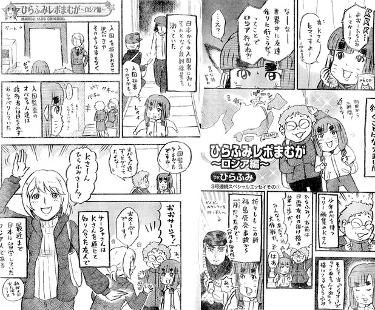
Индустрия манги и аниме в Японии начала активно развиваться после Второй мировой войны вместе с индустрией кинотеатральных развлечений. Западная анимация на тот момент по-прежнему качественно превосходила японскую, что привело к ее засилию в местных кинотеатрах. Гордым японским художникам это показалось непатриотичным, и они решили развивать свою технику анимации и вскоре научились создавать хорошие мультфильмы, не вкладывая в это много денег. Например, студия «Тоэй», основанная в 1948 году, со временем придумала распределять бюджет на проект так, чтобы его большая часть уходила на важные сцены, а неважные отрисовывали с меньшим качеством. В результате «Тоэй» быстро стала одной из ведущих японских студий анимации и начала получать заказы с Запада. «Тоэй» остается на лидирующих позициях в индустрии и по сей день, но в 50-х японская мультипликация как самостоятельный жанр все еще была мало привлекательна для западных зрителей, хотя уже в конце десятилетия появился первый японский полнометражный мультфильм, как будто предсказывая скорый взлет индустрии.
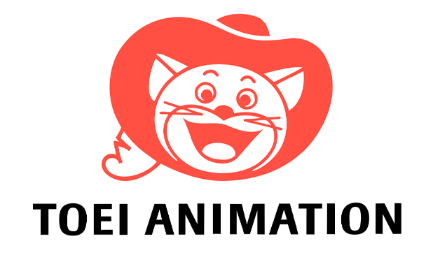
Осаму Тэдзука, родившийся в 1928 году, вырос в семье поклонников театра и кино и с детства равно приучался к японской и западной культуре. Он был поклонником анимации Уолта Диснея и начал рисовать мангу еще во время учебы в медицинском университете и после получения ученой степени никогда не возвращался к медицине, сосредоточившись на карьере художника. Это решение было судьбоносным для индустрии всей страны: Тэдзука стал одним из главных новаторов японской манги и анимации послевоенного времени и сумел заинтересовать западную аудиторию своими мультфильмами.
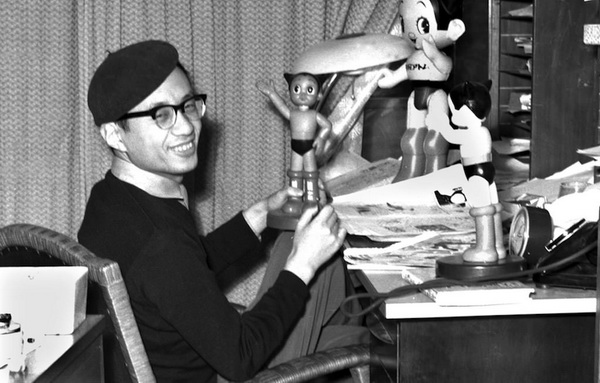
Осаму Тэдзука, родившийся в 1928 году, вырос в семье поклонников театра и кино и с детства равно приучался к японской и западной культуре. Он был поклонником анимации Уолта Диснея и начал рисовать мангу еще во время учебы в медицинском университете и после получения ученой степени никогда не возвращался к медицине, сосредоточившись на карьере художника. Это решение было судьбоносным для индустрии всей страны: Тэдзука стал одним из главных новаторов японской манги и анимации послевоенного времени и сумел заинтересовать западную аудиторию своими мультфильмами.
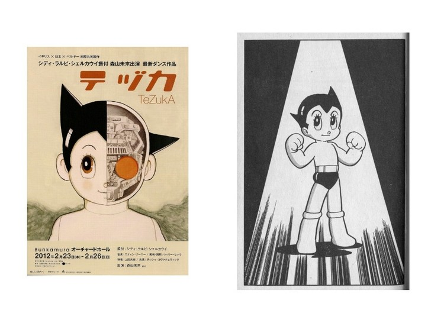
После успеха «Астробоя» Тэдзука продолжил работать, успев среди прочего между 1950-ми и 1960-ми создать мангу и одноименный мультсериал «Белый лев Кимба». Для Японии «Кимба» был первым цветным аниме-сериалом. «Кимба», вслед за «Астробоем», завоевал широкую аудиторию за границей. Интересно, что, судя по всему, студия Уолта Диснея, которого когда-то копировал сам Тэдзука, взяла идею «Белого льва Кимбы» за основу своего «Короля льва», в точности скопировав многих персонажей и повторив некоторые сцены японского мультфильма кадр-в-кадр. Компания Disney, впрочем, отрицает факт плагиата, но многие, включая озвучившего Симбу актера Мэттью Бродерика, склонны верить, что намеренное копирование действительно было. Студия «Тэдзуки» решила не судиться с Disney, потому что, по словам представителей японской компании, просто не располагала ресурсами для этого
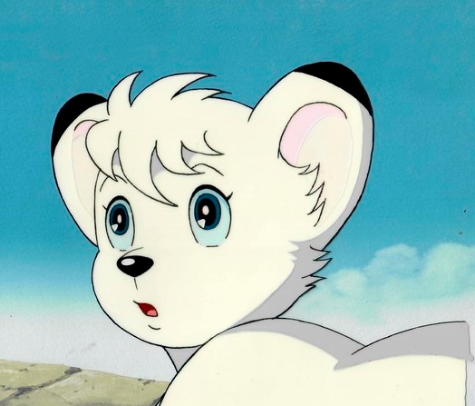
После успеха «Астробоя» Тэдзука продолжил работать, успев среди прочего между 1950-ми и 1960-ми создать мангу и одноименный мультсериал «Белый лев Кимба». Для Японии «Кимба» был первым цветным аниме-сериалом. «Кимба», вслед за «Астробоем», завоевал широкую аудиторию за границей. Интересно, что, судя по всему, студия Уолта Диснея, которого когда-то копировал сам Тэдзука, взяла идею «Белого льва Кимбы» за основу своего «Короля льва», в точности скопировав многих персонажей и повторив некоторые сцены японского мультфильма кадр-в-кадр. Компания Disney, впрочем, отрицает факт плагиата, но многие, включая озвучившего Симбу актера Мэттью Бродерика, склонны верить, что намеренное копирование действительно было. Студия «Тэдзуки» решила не судиться с Disney, потому что, по словам представителей японской компании, просто не располагала ресурсами для этого
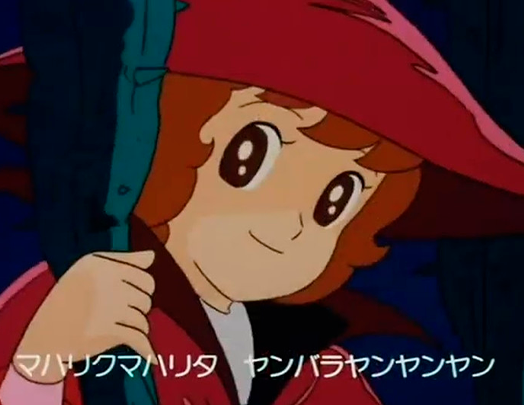
В это же десятилетие, в 1963 году, в аниме для мальчиков появился «Железный человек №28» — первый мультсериал в поджанре меха, название которого произошло от английского слова «механизм». Главные герои таких мультфильмов — управляемые людьми или самостоятельные человекоподобные боевые роботы. В 1968-м вышло первое аниме о спорте «Звезда Кедзина» про талантливого бейсболиста, а через год на волне успеха этого шоу вышло аналогичное, только для девочек, про женскую волейбольную команду. Также в 1969 году появилось первое эротическое аниме, снятое по мотивам «1000 и 1 ночи».
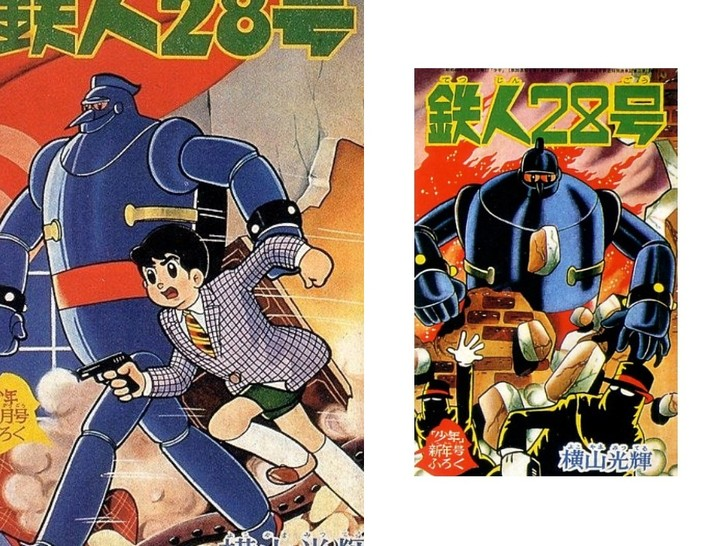
В 60-е западные телеканалы стали чаще покупать японские аниме-сериалы, но настоящий интерес к японской анимации за границей проявили в конце 70-х, когда в США и Европе выросла популярность космических опер и другого сайфая (в это время вышли первый фильм саги «Звездные войны» и полнометражная картина вслед успешному телешоу «Звездный путь»), а в Японии начали делать аниме-сериалы в этом жанре. Также в 70-е довольно тихо относительно будущего успеха началась карьера культового режиссера-аниматора Хаяо Миядзаки, который стал одним из главных героев «Золотого века» аниме в 80-х.
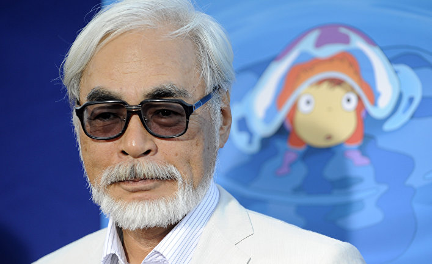
В 1980-е индустрия манги и аниме стала расти с удивительной скоростью: новые студии появлялись так быстро, как бедные родственники у только что получившего огромное наследство, продолжалась эволюция жанров и поджанров, а также начались смелые эксперименты по смешиванию жанров, развитие технологий позволило добиваться более высокого качества анимации и заниматься дистрибуцией через видеокассеты. Магистральным жанром аниме того времени стал киберпанк, на Западе хорошо известный по культовому полнометражному мультфильму «Акира» 1988 года о правительственных экспериментах над людьми и бандитских разборках в городе Нео-Токио, пережившем ядерный взрыв. Надо сказать, в самой Японии «Акира» не вызвал такого энтузиазма, как в США и Европе, хотя для искусства анимации это был прорыв — первое аниме, снятое со скоростью 24 кадров в секунду, да еще с грандиозной детализацией, которой раньше не бывало в японской мультипликации.
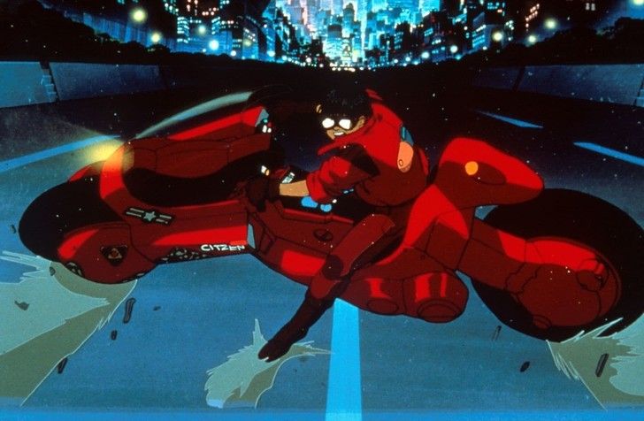
В 80-е также взошла звезда Хаяо Миядзаки, самого популярного японского режиссера-аниматора в мире. В это десятилетие появилась его студия «Гибли», в 1984 году режиссер выпустил свой первый по-настоящему популярный мультфильм «Навсикая из Долины ветров», а следом «Небесный замок Лапута» в 1986-м, «Мой сосед Тоторо» в 1988-м и «Ведьмина служба доставки» в 1989-м.
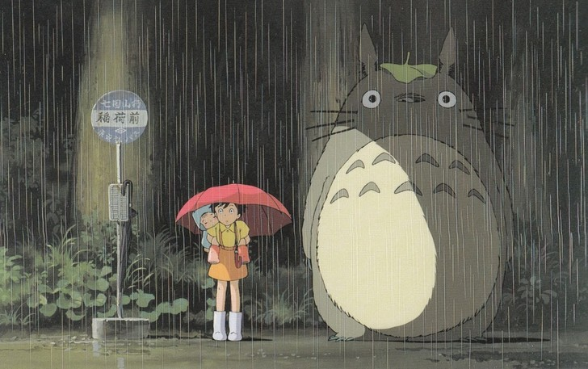
Еще две важные вехи 80-х для японской анимации: появление порно-аниме и отлаживание потока экспорта аниме на Запад, где наконец проявили интерес ко всему разнообразию японской мультипликации. Надо заметить, что в 80-е вышло огромное количество важных и успешных аниме-сериалов, но в США их перерабатывали для показа под американскую аудиторию, и сейчас мы, как правило, смотрим именно те переработанные версии.
В 1990-е после развала Советского Союза аниме появилось и в России, и у нас начали показывать те же мультсериалы, которые смотрели в США и Европе, — «Покемоны», «Хелло Китти», «Кэнди-Кэнди», «Гонщик Спиди» и другие. Вероятно, одним из самых запоминающихся образцов стал «Сейлор Мун: Луна в матроске» о группе старшеклассниц, перевоплощающихся в воинов для борьбы со злом. «Сейлор Мун» — одно из первых шоу нового аниме-жанра мультфильмов о девушках для девушек, появившегося в 90-е. В таких аниме-сериалах романтическая линия потеряла доминирующее положение, и героини стали более социально активными и проявляли лидерские качества, как будто эти мультфильмы сняли сегодня под влиянием новой волны феминизма.
Особая сила «Сейлор Мун» заключалась в том, что этот сериал объединил в себе черты аниме для девочек и аниме для мальчиков: главные героини были девушками, и романтическая линия оставалась частью сюжета, но еще эти девушки были воинами, и в каждой серии они с кем-нибудь сражались, а также важным элементом шоу было то, что они ходили в коротких юбках и при перевоплощении из обычных девушек в воительниц показывали их обнаженный силуэт — это тоже было приманкой для мальчиков. Благодаря крючкам для такой широкой аудитории «Сейлор Мун» стала одним из самых популярных японских аниме на Западе.
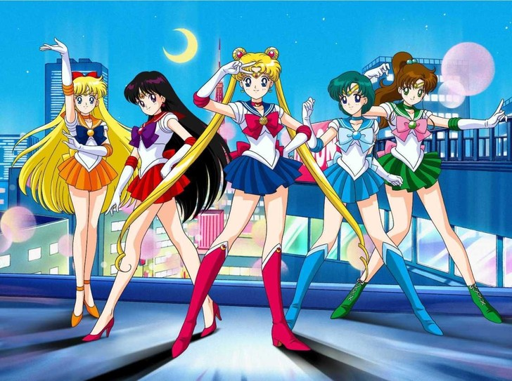
Если вернуться к России, то долгие годы аниме было нишевым развлечением, на которое те, кто не поддался его чарам, смотрели свысока, веря, что мультики — это только для детей. Сегодня заблуждение о том, что любая анимация — развлечение для детей, все еще сильно, но постепенно скепсис уступает место увлеченности: те, кто выросли на японской анимации, продолжают смотреть ее, повзрослев, и не воспринимают любовь к ней своих сверстников и нынешних подростков как инфантилизм. Японская анимация и правда рассчитана на людей разных возрастов и интересов и должна восприниматься на равных с условно «взрослым» кинематографом.
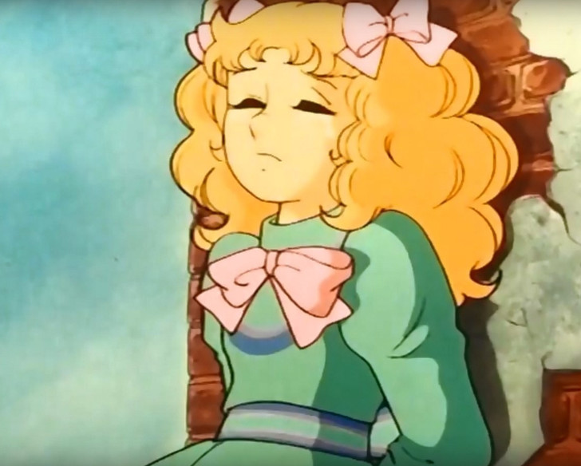
Аниме — в мире так называют японскую анимацию, в Японии — любую анимацию
Каваии — понятие, обозначающее в Японии что-либо, что индивидуум находит милым и очаровательным.
Акихабара — токийский квартал, известный самой большой концентрацией магазинов электроники и товаров для поклонников аниме, манги и видеоигр.
Косплей — перевоплощение в персонажей аниме, манги, компьютерных игр, книг, фильмов и сериалов с помощью костюмов, макияжа, грима, париков и актерской игры.
Манга — японские комиксы; большинство аниме основаны на какой-либо манге.
Мангака — художник комиксов (манги).
Отаку — в Японии так называют человека, который очень сильно чем-то увлечен; за пределами Японии так называют людей, увлеченных аниме и мангой.
Сёдзё — аниме и манга для девочек и девушек в возрасте 12 — 18 лет.
Сёнэн— аниме и манга для мальчиков и юношей 12 — 18 лет.